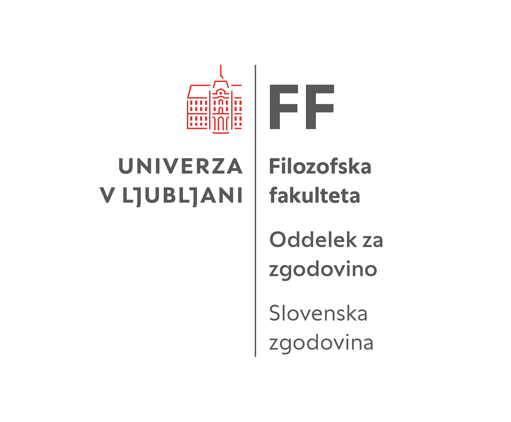

Doktorati : 100 let
Oster in potreben inštrument družbe


Nastanek slovenske univerze je bil prvenstveno produkt nacionalnih teženj, ki so potekala vse od sredine 19. stoletja; »prva vidna trdnjava«, »najvišja slovenska kulturna ustanova, ki si jo je narodna država postavila na triglavsko ozemlje proti sosedom«, kot je ob njeni desetletnici leta 1929 zapisal rektor Milan Vidmar, tedaj v svetu najbolj priznan slovenski elektrotehnik in šahist. Univerzitetni svet pa je tedaj ugotovil, da je »ljubljanska univerza severni branik naše zemlje«. No, treba je dodati, da je bil Vidmar, tako kot še nekateri drugi profesorji tedanjega časa, hkrati tudi goreč zagovornik univerzalne znanosti.
Konec prve svetovne vojne je Slovencem kot delu poražene države v nasprotju z velikimi pričakovanji o narodni združitvi prinesel razkosanje. Z razpadom Avstro-Ogrske monarhije leta 1918 so bili po volji velikih sil razdeljeni med štiri države. Časi po vojni in združitvi v centralistično urejeno Kraljevino Srbov Hrvatov in Slovencev 1. decembra 1918 ustanovitvi univerze sprva niso bili naklonjeni. Tudi slovenski politiki so dvomili, da bi jo bilo mogoče ustanoviti in so pobude sprva zavračali. Univerza se jim v turbulentnem prehodnem času, ob bojih za nacionalne meje, rastočih socialnih nemirih, ki so grozili z revolucijo, ter ob deset tisočih vojakov raznih nacionalnosti, ki so po razpadu soške fronte ostali na slovenskem ozemlju, ni zdela prioritetno vprašanje. V Beogradu je vladalo prepričanje, da je ena univerza v novonastali državi z morebitnimi odseki v Zagrebu in Ljubljani dovolj. Poleg ideje o univerzi v Trstu je obstajal celo predlog, da bi jugoslovanska vojska za potrebe bodoče slovenske univerze zasedla Gradec. Vojaška zasedba drugega največjega avstrijskega mesta zato, da bi Slovenci dobili svojo univerzo, bi bil brez dvoma zelo sočen in unikaten zgodovinski dogodek. Če bi se uresničil, bi se danes srečali v Gradcu, Slovenija, bi bila precej večja, poštna znamka, ki jo predstavljamo, pa seveda drugačna.
Pri Slovencih je tedaj in še nekaj časa vladala dilema, ali ima sploh smisel ohranjati svoj jezik in kulturo ali pa bi bilo bolje, da postanejo del enovitega jugoslovanskega naroda s srbohrvaškim jezikom. Na koncu je bilo v novi državi sprejeto načelo kompromisnega unitarizma, to je definicija, da so Jugoslovani en narod s tremi plemeni: Srbi, Hrvati in Slovenci.
Prehodno obdobje iz ene v drugo državo pa se je zaradi svoje protislovnosti in številnih neznank za univerzo izkazalo za zelo ugodno. Če ne bi nastala točno v tistem obdobju, bi jo verjetno dočakali šele po drugi svetovni vojni. Odločilen čas je bil torej med novembrom 1918 in majem 1919. Če bi se uresničilo stališče beograjskih oblasti, da se vprašanje univerze preloži na čas po pariški mirovni konferenci, ki se je začela januarja 1919 in je trajala leto dni, potem pa še na čas, ko bi Jugoslavija in Italija rešili vprašanje italijansko-jugoslovanske meje, torej do podpisa rapalske pogodbe leta 1920, bi bilo prehodno obdobje z začasnim narodnim predstavništvom in vlado, v kateri je bil podpredsednik dr. Anton Korošec, mimo. Vprašanje univerze bi preglasile ustavne razprave in najverjetneje bi se uresničil koncept z eno, beograjsko univerzo, ki bi imela podružnice v Zagrebu in Ljubljani, pri čemer bi bila Ljubljana verjetno podrejena tudi Zagrebu, ki je že imel svojo univerzo.
Nastanek univerze lahko razdelimo v tri faze: od konca prve svetovne vojne do januarja 1919, ko je potekalo oblikovanje začasnih stolic za zagrebško univerzo, ki bi jih nato prenesli v Ljubljano; od februarja 1919 do julija 1919, ko je sledilo ustanavljanje univerze v Ljubljani, in od sprejetja zakona o univerzi v Ljubljani v začasni skupščini v Beogradu 16. julija 1919 do nastanka univerzitetnega sveta, ki je bil med imenovanimi novimi profesorji izbran v Ljubljani 18. septembra 1919.
Še preden je predlog za ustanovitev nove univerze v slovenski in jugoslovanski politiki dobil kolikor toliko oprijemljivo podlago, so se začeli oblikovati prvi predlogi za kadrovsko zasedbo predvidenih petih fakultet. V ospredje je vstopilo vprašanje habilitacij. Razvnel se je spopad med »narodnjaškim« delom, ki je v ospredje postavljal nacionalne cilje pri ustanavljanju univerze in »znanstvenim« delom, ki se je želel strogo držati habilitacijskih kriterijev najbolj znanih evropskih univerz. Sicer zelo sočne podrobnosti z aktualnimi analogijami boste lahko prebrali v moji knjigi o zgodovini univerze, ki nosi naslov Svoboda duha.
Polemike so bile tudi, ker je del profesorjev, vključno s prvim rektorjem, matematikom Plemljem, v slovenščini videl zgolj enega od jugoslovanskih dialektov. Tovrstne debate o jeziku in univerzi so postale javne. Po časopisih so potekale polemike za in proti slovenski univerzi, razprave s sej univerzitetnega sveta pa so bile prej pri novinarjih kot v zapisnikih, ti pa so jih seveda z užitkom uporabljali za medstrankarske boje. Tej razpravi se seveda niso izognili tudi pri potrjevanju zakona o univerzi.
Ko se je v maju 1919 v strankarsko nacionalno in politično raznorodni Začasni narodni skupščini postavilo vprašanje potrjevanje proračuna, je bila priložnost prava, saj je vlada potrebovala vsak glas. V proračunskih kupčkanjih je nenadoma v predlog prišla tudi postavka za slovensko univerzo v zameno, da bodo slovenski poslanci glasovali za proračun. Regent Aleksander je zakon podpisal 23. julija, v uradnem listu je zaradi vmesne vladne krize izšel mesec dni kasneje, 23. avgusta 1919. Univerza je torej točno ob pravem času postala predmet političnega barantanja, kasneje bi njena vrednost na jugoslovanski politični borzi precej padla.
Ustanovitev univerze je imela konstitutiven pomen za slovensko znanost in je postopoma združila profesorje, prej raztresene po raznih avstrijskih univerzah. Kljub turbulentnim razmeram je med obema vojnama uspela zadržati vse fakultete in tudi okrepila je študij na njih – tudi na medicinski fakulteti, ki je sicer ostala nepopolna, a je pred drugo svetovno vojno že dosegla študij v šestih semestrih. Postala je ena ključnih nacionalnih in kulturnih institucij, ki so svojo pot začele med obema vojnama in se z republiško državnostjo po drugi vojni vzpostavile in profesionalizirale do te mere, da je njihov prehod v samostojno državo potekal brez dramatičnih rezov. To je ljubljanski univerzi tudi omogočilo, da je danes med nekaj sto najboljšimi univerzami na svetu. Žal je veliko naporov univerzitetnih znanstvenikov šlo v nič. V tranzicijskem procesu je bil zapravljen, razprodan ali uničen velik del intelektualne dediščine: od številnih izumov, tehnoloških inovacij in svetovno priznanih proizvodov do arhitekture in dizajna, ki so ga ustvarili diplomanti in doktorandi univerze in se je udejanilo v slovenskih podjetjih.
Primerjava položaja univerze ob ustanovitvi in danes kljub zelo različnim razmeram kaže precej podobnih dileme, med katerimi so najpomembnejše:
- razpon med ohranjanjem nacionalne samobitnosti in univerzalnostjo, ki je zaradi globalizacije še večji, kot je bil tedaj; zlasti gre tu za vprašanje obstoja jezika in vloge univerze pri njegovem ohranjanju, še posebej na znanstvenem področju;
- s tem povezan konflikt med »narodnjaško«, kot so jo tedaj imenovali in univerzalno znanostjo; torej danes med humanistiko in družboslovjem na eni in naravoslovjem in tehniko na drugi strani , kar se najbolj kaže pri vprašanju habilitacijskih meril. Po drugi strani pa gre v vsebinskem smislu za mnogo pomembnejše vprašanje, kako humanistiko in naravoslovje povezati in doseči sinergijo, saj brez tega ne bo ne slovenske, ne planetarne prihodnosti.
- vprašanje smisla in dejavnosti univerze: nekoč vprašanje, ali naj zgolj šola uradnike in učitelje – od tod tudi izraz vseučilišče, pa dijak in ne študent, učilnica in ne predavalnica, pouk in ne predavanja; danes naj bi bila univerza prilagojena gospodarstvu, koristna pa toliko, kolikor opravlja vlogo njegovega servisa;
- večno vprašanje avtonomije univerze oziroma odnosa med univerzo in politiko ter javnostjo; tudi danes je tu seveda ključno vprašanje denarja, so pa – kljub ustavno zagotovljeni vlogi svobodi raziskovanja in izražanja – tudi razne ideološke in politične oblike pritiska na neljube oziroma družbeno angažirane profesorje, od poslanskih vprašanj do grobih osebnih napadov, ki jih omogočajo moderni spletni mediji;
- vprašanje razpršitve ali centralizacije univerzitetnega znanja. Tedaj je šlo za vprašanje, ali naj bi bila kar za vso novoustanovljeno jugoslovansko državo dovolj ena, že obstoječa univerza; pri Slovencih pa vprašanje, ali naj bo univerza v Zagrebu, Trstu ali Ljubljani. Po osamosvojitvi Slovenije je politika ugotovila, da bi pravzaprav vsaka slovenska vas potrebovala, če že ne svojo univerzo, pa saj fakulteto, po možnosti zasebno, a z državnim denarjem.
Z nastankom univerze, ki je zbrala najpomembnejše slovenske znanstvenike, raztresene po tujih univerzah in inštitutih, se je prvič v zgodovini začela razvijati tudi slovenska znanost. Njena osnova so bili seveda doktorati. Način pridobitve doktorata po fakultetah je bil različen. Za naslov doktorja filozofije se je zahtevala doktorska disertacija (sicer sprva precej skromna, nekako na ravni med današnjo diplomo in magisterijem). Poleg tega so doktorandi opravljali rigoroz (t. i. strogi izpit). Sprva sta bila celo dva: glavni in stranski. Vprašanja so bila v glavnem povezana z vsebino disertacije. Podoben princip zagovora z rigorozom so imeli tudi na tehniki in teologiji. Na pravni fakulteti pa ni bilo pisne disertacije, doktorat so kandidati dosegli s tremi rigorozi, disertacijo pa so uvedli šele med drugo svetovno vojno.
Prva doktorska promocija z disertacijo je bila julija 1920. Tipkopis je obsegal 33 strani. Doktorat je bil tedaj nekakšen zaključek študija, naravoslovje in humanistika pa prepletena, zato je bil prvi doktorat iz kemije ubranjen na Filozofski fakulteti. Prva doktorandka je bila Anka Mayer, kasneje poročena Kansky, kar pa je splet naključij, ker ni bila edina tisti dan, torej ni šlo za emancipacijske težnje tedaj še izrazito moške univerze. Doktorirala je iz kemije, tema disertacije je bila učinkovanje formalina na škrob. Promovirana je bila 15. julija 1920. Bila naj bi 72. ženska na svetu, ki je do leta 1920 prejela naziv doktorice znanosti, verjetno pa prva ženska, ki je bila hkrati tudi prvi doktorand kakšne univerze. Anka Mayer ni ostala na univerzi, zato je prva (privatna) docentka postala filozofinja Alma Sodnik, ki je po drugi svetovni vojni v petdesetih letih postala tudi prva dekanja Filozofske fakultete. Emancipacija se je v zgodovini univerze in v pretežno konservativnem slovenskem okolju uveljavljala počasi in je zagon dobila šele po drugi svetovni. Ta trend se je – z izjemo nekaj fakultet – od takrat krepko preusmeril v feminizacije univerze. V več kot stotih letih po nastanku univerze je bilo samo na Filozofski fakulteti do 31. marca 2024 ubranjenih 2305 doktoratov.
Božo Repe